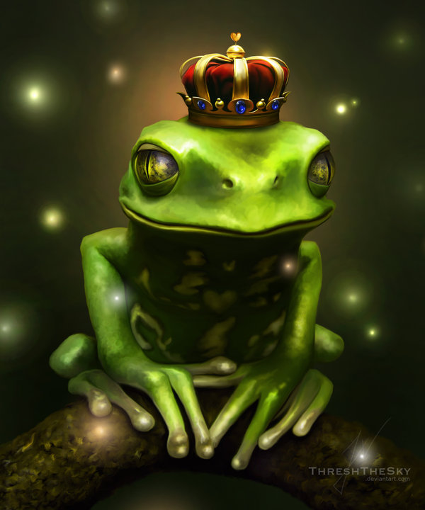

Exquisite Corpse
Once upon a time, there was a beautiful princess.
She even had a pink pony. How cool is that? But one day... her pony turned evil.
The princess was riding her pony through the forest to the lake, when suddenly her pony bucked her off and ran away.
The princess was left all by herself in the forest and had no idea how to get home.
The princess decdied to walk in the direction of the lake, but ended up walking in the direction of the evil dragons lair. The Dragons lair was surounded by a small moat, inhabited by many frogs. One of these frogs was different though, it reminded her of someone, and happened to be wearing what seemed to resemble a crown.
The princess reached her hand toward the frog. But the frog ran away. She traced the frog through the forest and into another pile of frogs. To catch the special frog, princess swim through the pool of frogs and found an entrance to outer space.
the entrance to outer space thus lead her to outer space, and in she went with all the frogs. But because she had no spacesuit, she imploded along with all the frogs, except the special magical frog with the crown, who attempted to navigate around space with his frog legs